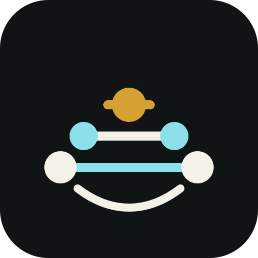
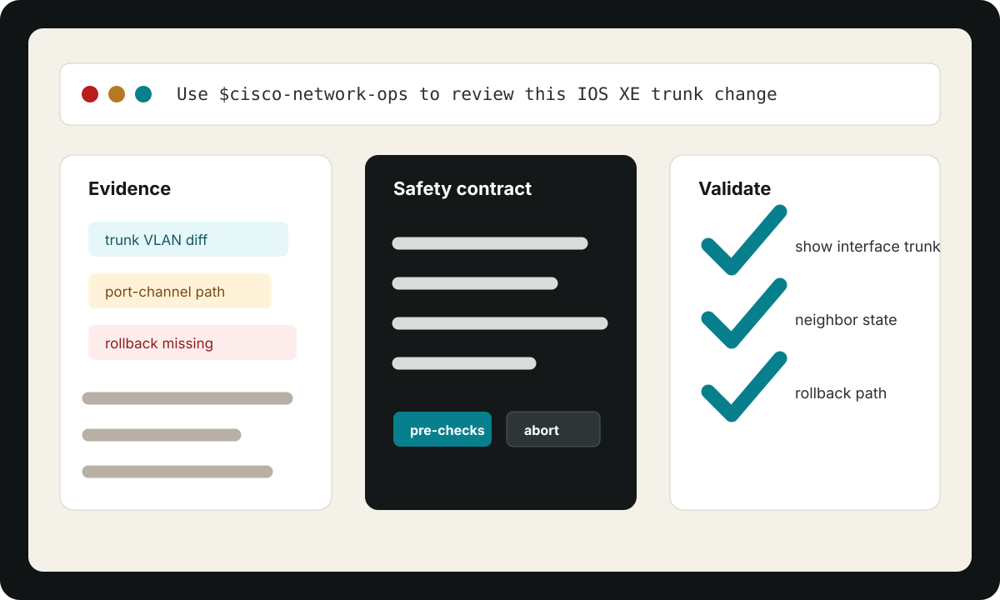

Codex
codex plugin marketplace add olandodeflexy/cisco-network-ops-skill

CISCO NETWORK OPS SKILLDiagnose Cisco changes before they touch production.
An AI-agent skill for reviewing Cisco configs, diffs, logs, incidents, and automation with evidence, risk controls, validation, rollback, and escalation notes.
Independent open source project. Not affiliated with, endorsed by, or sponsored by Cisco.
install
codex plugin marketplace add olandodeflexy/cisco-network-ops-skill
claude plugin marketplace add olandodeflexy/cisco-network-ops-skill
claude plugin install cisco-network-ops-skill@cisco-network-ops-skill
The skill works from artifacts you provide. It does not connect directly to routers, switches, firewalls, or controllers.
workflow
The skill routes requests through platform, blast-radius, routing, switching, security policy, observability, and automation failure modes before recommending a next step.

Identify the platform, topology role, risk category, missing context, and the exact artifact that supports the current hypothesis.
Keep production changes gated by read-only checks, maintenance context, blast-radius limits, abort criteria, and human approval.
Return pre-checks, post-checks, parser or lab options, rollback steps, and escalation data that operators can verify.
comparison
| Capability | Cisco Network Ops Skill | Generic prompt | Static runbook |
|---|---|---|---|
| Platform awareness | IOS XE, NX-OS, IOS XR | Inconsistent | Manual lookup |
| Risk contract | Required | Optional | Usually partial |
| Evidence handling | Explicit | Ad hoc | Operator dependent |
| Rollback guidance | Required for changes | Often missing | Document dependent |
| Agent packaging | Codex + Claude Code | No | No |